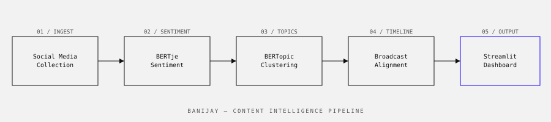

Banijay Benelux · 2022
An NLP-driven analytics platform that aggregates social media reactions to television formats and surfaces audience sentiment, topic clusters, and engagement patterns for content teams.

Banijay Benelux produces some of the Netherlands' most-watched television formats. Audience feedback used to reach content teams through broadcast ratings and occasional focus groups — slow, expensive, and retrospective. Social media offers a real-time signal, but the volume of data (thousands of posts per episode for popular formats) made manual monitoring impractical.
Build a system that can process Dutch-language social media text at scale and surface actionable insights — not just raw sentiment scores, but specific topics and moments that drove strong reactions. The output needed to be usable by content teams without data science backgrounds.
Dutch NLP is harder than English NLP. Fewer pre-trained models, more informal abbreviations and dialect in social media text, and compounding words that standard tokenisers handle poorly.
A three-stage pipeline feeding a live dashboard:
Content teams used the dashboard in production during the second half of the 2022 broadcast season. Producers reported finding specific audience reactions that informed editorial decisions for the following episode — something that wasn't previously possible between episodes with the old process.
The most important thing I learned wasn't technical: it was that the most valuable output wasn't the overall sentiment score (which was what was originally requested) but the topic clusters and the timestamp alignment. A content producer doesn't care that an episode scored 0.67 positive — they care that reactions spiked negatively at minute 42 and the dominant topic cluster was about a specific contestant.
Getting there required several rounds of showing the output to actual users and iterating based on what they stopped to look at. The final dashboard is significantly simpler than the first version, which tried to show everything.